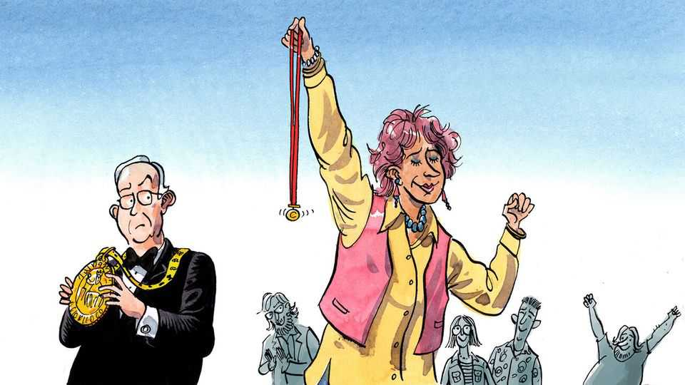

Europe’s true architects of integration
The nominees for the Charlemagne column prize are…

Aug 13th 2026
What does it take to forge ever-closer union among Europeans? Ask a Eurocrat in Brussels and they will point to a torrent of harmonising edicts agreed over decades of all-night summits. By standardising chemicals regulations, mobile-phone chargers, bottle-cap design and so on, the European Union is pushing towards a federal state. The founding fathers of the EU championed this approach. For their troubles many went on to receive the Charlemagne prize, a gong bestowed by worthies in Aachen, the German city from which your columnist’s namesake once ruled. These days the honour mostly goes to sitting presidents of EU institutions and other continental grandees.
Yet surely European integration is about more than summits and regulation (right?). Those who make Europe feel like a single continent not just in theory but in day-to-day life get too little recognition. A bauble is needed for those who knit Europeans together without ever having attended a summit or negotiated a directive. One might call it the Charlemagne column prize, or “Charlie” for short. The nominees for the inaugural award are…
Michael O’Leary. The EU is keen on free movement. Mr O’Leary, the boss of Ryanair since 1994, has enabled the next best thing: very cheap movement indeed. Fancy a weekend in a fourth-tier Romanian city? If you don’t mind waking up before dawn and dragging yourself to a “secondary airport” far removed from human civilisation, you can get there for the price of a sandwich lunch. The cantankerous Irishman annoys EU-wallahs by railing against regulation—while having benefited from their drive to allow low-cost airlines to compete against staid flag-carriers.
Sofia Corradi. In 1969 this Italian academic conceived a system whereby university students could complete part of their degrees in another European country. Many jumped at the chance of an Erasmus year, a scheme now run by the EU. Given the number of pan-European romances—and the more than 1m “Erasmus babies” credited to the scheme—it is unclear how much studying actually goes on. “Mamma Erasmus”, as Prof Corradi became known, passed away in October 2025. Her contribution to ever-closer union has brought some Europeans very close indeed.
Mads Mikkelsen. What do an Albanian terrorist financier with James Bond in his sights, a Nazi scientist vying against Indiana Jones, a blood-soaked Norse warrior and a scheming French count all have in common? All were played by this brooding repository of continental dastardliness. For decades Brits had a monopoly on playing Hollywood baddies. It took one cheekboned Dane to wrest the villainy crown back for the European mainland.
Slavoj Zizek. Hundreds of millions of Europeans are collectively baffled by the pronouncements made by this Slovenian philosopher. The Lacanian-Hegelian theory of ideological subjectivity is as incomprehensible in Lapland as it is in Liguria.
Milda Mitkute. Different as they may be, all Europeans turn out to have a wardrobe full of unwanted clothes. Vinted, which Ms Mitkute co-founded in Vilnius in 2008, has created a single market in last season’s double-breasted blazers. The result is a rare European tech success. What Robert Schuman once did for coal and steel, the Lithuanian firm now does for the humble Zara cardigan.
Aleksander Ceferin. The boss of UEFA is the world’s second-most powerful football administrator. Seen another way, he is the most powerful football administrator to have never given a peace prize to Donald Trump. Europeans far and wide lauded the Slovenian for boycotting the recent FIFA World Cup final. The UEFA Champions League, where Gulf-owned clubs vie for glory, is one of the rare fixtures that draw Europeans together.
The Guetta family. Three French-born siblings together form an improbably complete portrait of modern Europe. Bernard is an MEP specialising in foreign affairs and human rights. Nathalie, a former circus performer, has become a star on Italian television. David, their half-brother, is a superstar DJ whose Ibiza hymns rival the croissant as Europe’s most successful cultural export.
Pierre Coffin. The EU maintains 24 official languages. Mr Coffin has created a 25th, understood by children across the bloc: the patois of the Minions. The Frenchman voices the mumblings of the goggle-eyed yellow henchmen, which sound much the same in Finnish or French renderings. Europe has not possessed a dialect so readily understood across its borders since Latin.
Viviane Reding. As an EU commissioner in the late 2000s she quashed the mobile-phone roaming fees Europeans paid when visiting other EU countries, an expensive bugbear. Alas she also pioneered the data-privacy rules that resulted in Europeans having to bat away the irksome “cookie pop-ups” every website now serves up. The Luxembourgish pol serves as a reminder the Eurocracy is capable of both the sublime and the inane.
Perhaps the modern unifiers of Europe are not good Europeans at all. Nobody has riled the continent into a collective jolt so much as its foes. There is Vladimir Putin, the Russian president whose invasion of Ukraine has revealed the EU’s previously unknown steely side. Mr Trump has goaded Europe’s defence efforts by threatening to ditch NATO. Viktor Orban tried his best to blackmail and derail the EU as Hungarian prime minister, but ultimately failed.
The inaugural Charlie might thus go to someone who has strengthened Europe by opposing it—albeit more constructively than Mr Putin. Such a paradoxical laureate springs to mind. For demonstrating the value of remaining in the EU rather than enduring the chaos of leaving, and for turning Brexit into a continental cautionary tale, Nigel Farage, its ideological architect, is awarded the first Charlemagne column prize. The EU’s most famous basher has proved its most useful federalist. Glückwunsch!■